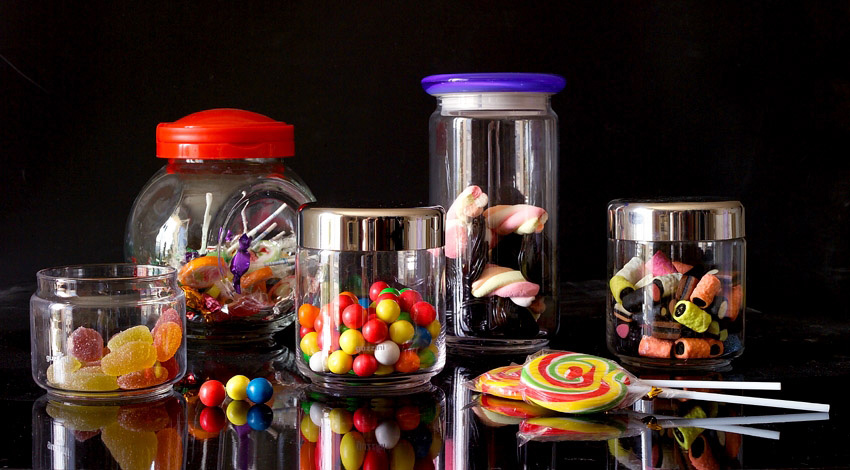
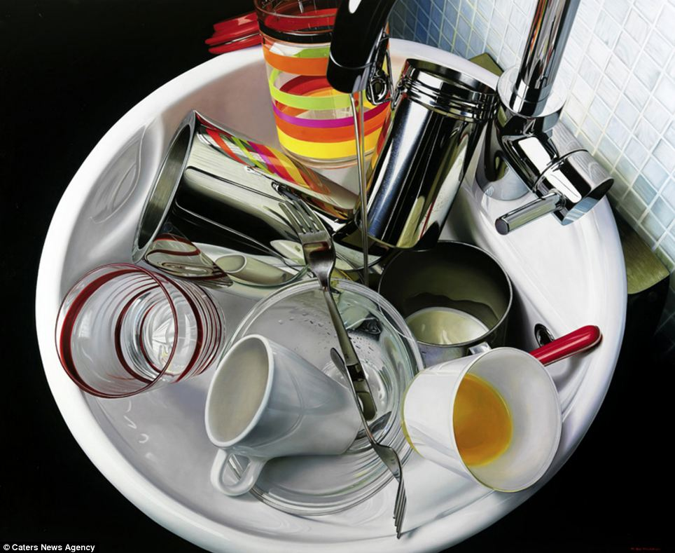

극사실주의
최근 수정 시각: 2019-02-28 14:44:19
분류:
미술사
- 상위 항목
서양 미술사의 시대 · 사조
[ 펼치기 · 접기 ]
극사실주의 極寫實主義Hyperrealism, Super Realism
 
극 사실주의작가 로베르토 베르나디(Roberto Bernardi) 의 작품
캔버스에 유화.
1960년대 후반 미국에서 일어난 새로운 미술경향으로, 현실을 있는 그대로 완벽하게 그려내는 기법. 포토리얼리즘(Photorealism)[1]과 장 보드리야르의 철학[2]을 기반으로 만들어진 미술 경향이다. 사진 이나 실물처럼 극사실적으로 그림을 그리는 방식을 취한다. 확대하면 흐려지거나 깨지는 사진보다 사실적인 화풍을 추구할 때도 있기 때문에 그만큼 많은 시간과 실력을 요구한다.
작가마다 사용하는 재료가 다르며 실물, 상상, 생각으로 그리기도 하지만 대개 사진을 레퍼런스 삼아 그린다. 그도 그럴 것이, 조금이라도 움직이거나 빛의 방향이 달라지거나 한다면 그리기 어려워지기 때문.
나 SNS에서 "정말 진짜같이 그리는 그림"등의 제목으로 떠다니곤 한다.
주의해야 할 것은, 극사실주의와 사진은 '사실적인' 그림을 만드는 것이 목적이긴 하지만 결국 그 사실감이란 것은 작가의 주관이 들어간 것. 물체를 있는 그대로 찍는다는 사진 역시, 실제로는 작가의 의도에 따라서 조명과 셔터 타이밍만으로도 수없이 다른 결과와 느낌을 줄 수 있으며, 사실적이라는 그림 역시 '사실성'을 재현하는 과정에서 작가의 주관이 들어간다. 실제로 우리가 보는 사물은 극사실주의 그림처럼 화려해 보이지 않는 경우가 많다는 것을 유념하자.
일부 평론가들은 극사실주의가 철학적으로도 의미가 있다고 주장한다. 이런 주장을 펼치는 사람들은 장 보드리야르가 이야기한 시뮬라시옹을 끌어들여, 가상인 그림이 현실보다 더 현실같고 매력적인 현대 사회의 세태를 표현한 것이라고 주장한다. 역설적인 상황을 만들어 관객이 이런 현대시대의 상황이 아이러니함을 느끼도록 유도한다는 것이다.
하지만 다른 한편으로는 '베껴 그리기'보다 나은 것이 무엇인가 하는 비판도 존재한다. 사실 극사실주의라는 것 자체가 사진이 등장한 20세기의 미술계의 경향(모더니즘)에 정면으로 대치되는 것으로, 이러한 경향은 현대에 와서 더 강해지기 시작했는데, 비교적 이해하기 쉬운 극사실화를 더 호의적으로 보는 일반인의 시야와 달리 실제 미술계에선 회의적 시선이 많다. 일단 당연한 얘기지만 사진을 찍는 게 극사실 그림을 그리는 것보다 훨씬 더 효율적이고 간편하다. 굳이 사실적인 것을 보여주려고 일일이 붓질하며 그리는 건 자동차와 경주 대결하는 것만큼이나 미련한 짓일 뿐이다. 일부 사람들은 이를 예술가의 공력(또는 노력, 예술혼)이 들어갔다느니 하는 말로 옹호하지만, 솔직히 그냥 눈으로 보기에는 사진이나 극사실주의나 거기서 거기다. 일반인들도 처음 볼 때는 '대단하다'라고 평가하지만 여러 번 보다보면 '차라리 사진을 찍지'하는 평을 하게 된다.
게다가 위에서 언급한 것처럼 극사실화에는 작가의 개성이 들어가기 어렵다는 점에서 그 한계가 분명하다. 현대 미술의 패러다임은 어디까지나 기존에 없던 새로운 시도를 하는 것에 있다. 이미 남들이 했던 것을 따라하는 것은 경제적인 이득을 추구하는 상업예술의 영역에 있는 것이다.[3] 새로운 것을 추구하지 않는 예술가는 곤경에 빠지게 될 수밖에 없다. 표절 문제는 오늘날 예술계에서 매우 심각하게 거론되는 문제기 때문. 저런 극사실주의 작품도 원 사진 저작권의 문제나, 다른 작품과의 분위기의 유사성 문제에서 벗어나기 어렵다.
사진을 보고 그리거나, 실제 사물과 사람을 보며 그리기 때문에 판타지나 이 세상에 없는 물건을 '사실주의'가 아닌 '극사실주의'로 그려낼 수 없다. 허구, 상상의 표현은 '사실주의'까지가 한계다. 정확히 말하자면 극사실 기법으로 그려낼 수는 있지만, 실체가 없으므로 내용상 극사실이 되지 못 하는 것. 하지만 위에 서술된 현대미술의 메이저한 사조에 대한 반발의 발로라는 해석도 있다.
극사실주의 그림이 이렇게 예술적으로는 한계가 있을지 몰라도 상업적으로는 필요한 분야가 있는데, 바로 생물 도감에 들어가는 그림이다. 살아 움직이고 있는 생물을 초점 흔들림 없이 사진으로 찍는 데는 한계가 있으며, 색깔이나 질감 등도 보여주기 어렵다. 수중 생물, 새, 맹수, 경계심이 강한 동물 같으면 근접 사진을 얻는 것조차 힘들며 카메라 렌즈에 의한 형상 왜곡 또한 피할수 없다. 원하는 자세로 보여주기는 더욱 힘들다. 하지만 그림으로 하면 작가는 여러 장의 사진, 동영상, 박제나 털가죽 등을 실물을 참고하여 정밀하고도 원하는 모습으로 그려낼수 있게 된다. 물론 생물만이 아니라 전자제품, 자동차 등도 사진보다 더 그림이 실물같은 모습을 보여줄수 있다. 심지어 멸종된 생물까지도 그려낼 수는 있다. [4]
극사실 주의 조각도 몇몇 작가가 하고 있으며, 주로 인물을 대상으로 한다. 스케일을 달리 하거나 현실에 없는 형상으로 만들어 내기도 하며, 사람과 똑같이 보이되 사람은 아니라는 데서 오는 독특한 감정을 불러일으키는 것이 목적이다.[5] [6]
참고로 진위가 의심되는 이야기긴 하지만, 고대 그리스 시대에 제욱시스와 파라시우스라는 두 화가의 일화가 이와 유사하다. 서로 라이벌 관계였던 둘이 어느 날 그림 대결을 벌였는데, 제욱시스가 그린 포도가 너무 사실적이어서 새가 날아와 그걸 쪼아먹으려고 들었고, 이에 의기양양해진 제욱시스가 파라시우스한테 다가갔더니만, 왠 커튼으로 그림을 반쯤 가려놓은 상태라서 열어제치려 들었는데 알고보니 커튼까지 죄다 그림이였고, 그걸 열어제치려 한 시점에서 변명할 수 없을 정도로 속아넘어갔다는 걸 깨닫고는 GG를 쳤다는 내용.
우리 나라에도 비슷한 이야기가 있는데, 신라 시대의 화가 솔거(연대미상)가 황룡사 벽에 그린 소나무 그림이 너무 진짜 같아 새들이 날아와 앉으려다 부딫쳐 죽는 일이 자주 있었고, 세월이 흘러 그림이 낡아 다른 화공이 덧칠을 하자 새들이 더이상 안 날아들게 되었다는 이야기가 삼국사기에 실려 있다. 절이 불타 없어졌기에 역시 진위는 알수 없다.
그 외에도 화룡점정 같은 고사성어에서 묘사하는 그림도 이와 유사할 것으로 추정되지만, 실제 그림이 남아있다든가 하는 건 아니기에 진짜 이야기인지는 알 수가 없다.
[1] 사진의 영향을 받은 미술 경향이다.
[2] 보드리야르의 철학은 현대사회에서 파생실재(hyperréel)가 실재(réel)를 압도하는 현상, 쉽게 말해서 가짜가 진짜보다 더 진짜처럼 받아들여지고, 이에 더하여 가짜가 진짜를 대체하는 현상을 탐구한다. 여기서 가짜를 보드리야르는 (제3열의) 시뮬라크르(simulacre)라고 하였고, 이것의 동사적 형태를 시뮬라시옹(simulation)이라고 하였다. 자세한 사항은 보드리야르 항목을 참조.
[3] 하지만 현실은 미술계도 이미 상업화한 지 오래지만. 오늘날 순수미술계는 새로움을 찾는 것이 아니라 허접한 작가의 작품을 새롭다고 꾸며낸다. 실제로 광고기업 출신 홍보전문가가 작가의 작품성을 만들어내고 띄우는 일은 이미 예전부터 공공연하게 벌어지고 있었다.
[4] 생물 도감은 어쩔수 없이 그림을 쓰는 것이지만, 무생물의 경우에는 결과가 사진보다 더 나을 것도 없는데 시간과 비용이 더 많이 들어가기 때문에 많이 하지는 않는다. 현실적으로는 도감의 그림도 비용과 시간 때문에 극사실까지는 아니고 사실주의 정도로 마무리하는 경우가 더 많다.
[5] 불쾌한 골짜기에서 느끼는 두려움 비슷한 감정과는 다르다. 움직이지 않을 뿐 사람과 완전히 똑같기 때문이 신기하게는 느껴도 불쾌한 감정은 잘 일어나지 않는다. 재미있느 것은 스케일이 크든 작든 마찬거지.
[6] 제작 기법과 결과물로 보면 영화 촬영 등에 쓰이는 특수분장이나 더미도 극사실을 추구하지만, 이는 목적이 전혀 다르므로 극사실 조각이라 부르기에는 어폐가 있다.
이 저작물은 CC BY-NC-SA 2.0 KR에 따라 이용할 수 있습니다. (단, 라이선스가 명시된 일부 문서 및 삽화 제외) 기여하신 문서의 저작권은 각 기여자에게 있으며, 각 기여자는 기여하신 부분의 저작권을 갖습니다.
나무위키는 백과사전이 아니며 검증되지 않았거나, 편향적이거나, 잘못된 서술이 있을 수 있습니다.
나무위키는 위키위키입니다. 여러분이 직접 문서를 고칠 수 있으며, 다른 사람의 의견을 원할 경우 직접 토론을 발제할 수 있습니다.